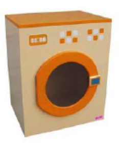

Materials
Table of Contents
1 Introduction
- When creating a new product, one consideration is what to make it from. When choosing a material, there are a number of considerations. How should it look when it’s finished (aesthetics)? Can it be formed and joined in the way you want it to? Is it strong enough for the task? Is it cost-effective? Is the material “sustainable”?
Task: Complete the following tables, using the Internet and text book to help you.
Common woods
- Woods come from trees, which are chopped down, then worked into sheets of wood, or planks. As a natural product, they are sustainable (if the forest they come from is being re-planted), and have an attractive grain in the wood.
| Wood | Category | Colour | Properties | Common Uses |
|---|---|---|---|---|
| Pine | Durable, machines well | |||
| Oak | Furniture Making | |||
| Beech | Light brown | |||
| Larch | Softwood |
Manufactured boards
- Man-made boards are those which are produced in factories. They tend to have a uniform appearance, and have unique properties.
| Board | Colour | Properties | Common Uses |
|---|---|---|---|
| Cardboard | |||
| MDF | Cupboard doors | ||
| Plywood | Strong; comes in different finishes to improve appearance | ||
| Chipboard | Brown, with a coarse texture | ||
| Hardboard | Furniture, flooring construction |
Plastics
- Often derived from oil, plastics provide a variety of durable materials which can be formed easily into whatever shape is required, and can be highly durable. Their relatively low cost has led to their popularity for use in all manner of every day objects. Unfortunately, plastics tend not to be easily bio-degradable (often taking several hundred years to break down in landfill), and as such need to be recycled wherever possible.
- Plastics can be either classed as thermosetting, or thermoplastic. When forming them into a shape, Thermosetting polymers normally need to be mixed with a curing agent, which allows them to set solid. Once set, they cannot be re-formed into another shape. Thermoplastics can be repeatedly heated until soft, then cast into a new shape and cooled.
| Plastic | Category | Properties | Common Uses |
|---|---|---|---|
| Acrylic | Thermoplastic | ||
| ABS | High impact resistance, strong | ||
| HIPS | Packaging | ||
| PP | Plastic pipes, school chairs | ||
| Nylon | Hard wearing | ||
| Urea Formaldehyde | Thermoset |
2 Metals
- Metals come from ores which are dug from the ground, and purified. They can be cast into sheets, or ingots ready for forming into different shapes.
- Some metals can be combined with other materials to form alloys, which have new, unique properties. Steel is made by combining iron and carbon, for instance.
- Ferrous metals are those which contain iron.
| Metal | Category | Colour | Properties | Common Uses |
|---|---|---|---|---|
| Copper | Non-ferrous | Excellent electrical and thermal conductor | ||
| Mild Steel | Nuts, bolts, etc | |||
| Aluminium | Grey | |||
| Stainless Steel | Ferrous |
Smart Materials
| Material | Properties | Common Uses |
|---|---|---|
| Smart memory Alloys | Can be bent out of shape, but returns to original shape when heated. | |
| Piezoelectric materials | Mics, speakers, alarm systems. | |
| Quantum Tunnelling composite | An insulator which becomes a conductor when put under pressure. | |
| Electroluminescent Materials | Safety clothing, safety lights. |
3 Understanding Check
Past Paper Questions
June 2010, Q5a. This question is about programming a greenhouse temperature / environmental control system model. The greenhouse model has a heat sensor, and a roof vent that opens and closes to regulate the temperature.
(a) (i) Suggest a specific material for the greenhouse frame. (2 marks)
(a) (ii) Explain why the material that you have selected is suitable. (2 marks)
(a) (iii) Suggest a suitable component to sense that the roof vent is closed. (2 marks)
June 2011, Q4a. This question is about a washing machine control system model. The washing machine model is made from plywood and has: -
- a door that opens and shuts
- a button to start the simulated wash
- a door lock to stop the door opening
- a geared motor to turn the wash drum
- an LED that lights to show that the drum is turning.
 (a) (i) Suggest a suitable plastic for the window in the door. (1 mark)
4 (a) (ii) Explain why the plastic you have named is suitable. (2 marks)
4 (a) (iii) Suggest a suitable component to operate the door lock. (1 mark)